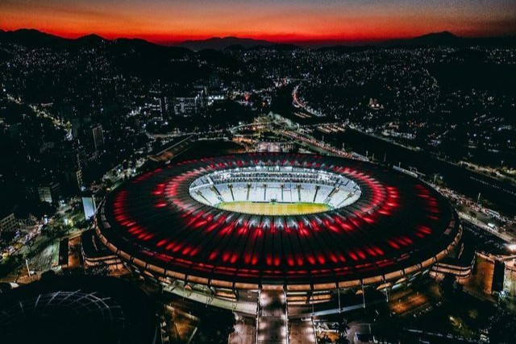
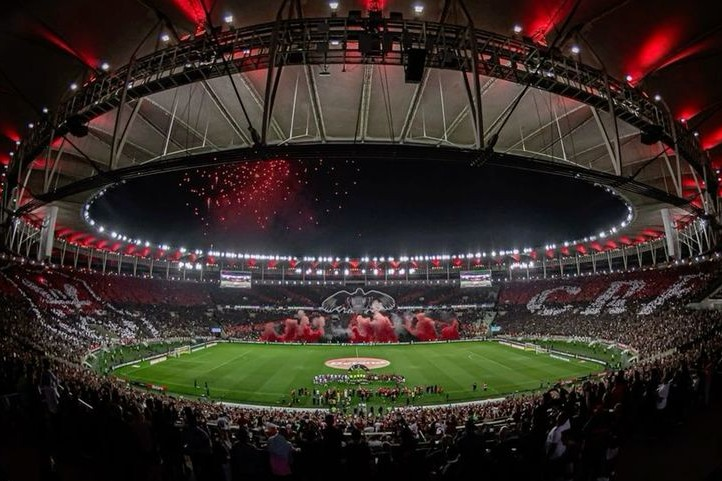

Our Temple: Maracanã


Stadium Information
The Estádio do Maracanã stands as the undisputed heart and soul of Clube de Regatas do Flamengo, serving as the official home ground where the club's most legendary historical narratives are written. Opened in 1950 to host the FIFA World Cup, this architectural marvel quickly transformed from a civic monument into a sacred temple for the Nação Rubro-Negra. For decades, it has been the majestic stage for unforgettable international conquests, domestic triumphs, and emotional matches that have defined generations of football fans across Brazil and the entire world.
On matchdays, the Maracanã undergoes a breathtaking transformation into a roaring sea of red and black, showcasing an unmatched spectacle of football culture. When over sixty thousand loyal supporters gather to wave massive flags, light up smoke screens, and sing in absolute unison, the stadium's concrete structure literally vibrates. This fascinating physical phenomenon, universally celebrated by sports media as the famous "Tremor do Maracanã," creates a hostile environment for rivals and acts as a powerful energy source that drives Flamengo's players toward collective greatness.
Beyond its monumental scale and electric matchday atmosphere, the stadium acts as a living museum dedicated to the club's elite heritage. It is the very pitch where icons like Zico built their immortal legacy, where Adriano Imperador orchestrated heroic late-season comebacks, and where modern legends continue to assert the club's continental dominance. For any visitor or passionate supporter, entering the Maracanã is not just about witnessing a football match; it is an immersive journey into the deep-seated identity, resilience, and monumental glory that defines the essence of Flamengo.